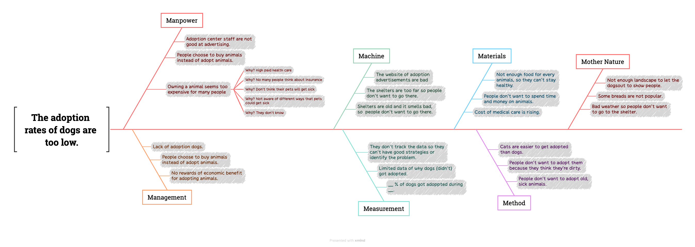

research
our research was done with the help od DR Lee this research is about teh abdoption of dogs and in this research page you will find videos about our survey and also writings of out data and teh answers we got form the peopel in da'an Dr lee also tought su how to do research such as teh fish boon analysis and the 5whys which helped us do our research more efectively
Fish bone and 5 why

first da'an student
Second da'an student
our first version of our survey
With this survey, we are trying to research society’s attitudes towards the financial barriers of pet ownership and assess if knowledge about potential pet illness will change people's attitudes and awareness about pet insurance, bring a rise in usage and lower people’s beliefs about the high cost of owning a pet. I want to learn “How people think about dog costs, and if people don’t want to own dogs because of cost,” “How much knowledge of pet illness does people know,” and “ Can people even guess the cost of getting health care for animals” from my survey questions. After I get this information, I will be able to say “How much people think about the cost of an animal,” “How much financial assistance might people need,” and “How people know about pet insurance.” Questions
Q1: Do you currently own any dog?
(A) Yes, I currently own a dog.
(B) No, but I used to own a dog.
(C) No, but I’m interested in having a dog.
(D) No, and I have no interest.
Q2: What do you expect the average annual medical expenses are for having a dog?
Q3: What do you feel is the main reason preventing people from adopting a dog?
()Cost of daily supplies
()Cost of health care
()Allergies to dogs
()Afraid of dogs
()Smell and cleanliness
()Time pressure
()Too much trouble to go through the adoption process
()Worried about sadness when dog passes
()Taking care of dogs is too much effort
()Lack of space
()Neighborhood / Family doesn’t allow
()Other : ______
second version of our survey
Q1gender
male
female
other
Q2Age
18 - 24 歲
25 - 34 歲
18 歲以下
35 - 44 歲
45 - 54 歲
55 - 64 歲
65 歲以上
Q3 have you ever had a dog
Yes i have a dog now
Yes i had a dog
no i don't have a dog
Q3: What do you expect the average annual medical expenses are for having a dog?
Q4: What do you feel is the main reason preventing people from adopting a dog?
()Cost of daily supplies
()Cost of health care
()Allergies to dogs
()Afraid of dogs
()Smell and cleanliness
()Time pressure
()Too much trouble to go through the adoption process
()Worried about sadness when dog passes
()Taking care of dogs is too much effort
()Lack of space
Q5If your dog was sick what would you do first
Send to docter immediately
check online
observe teh dog
check on money
Q6medical fees lower how would it change you willingness to adopt a dog.
1
2
3
4
5